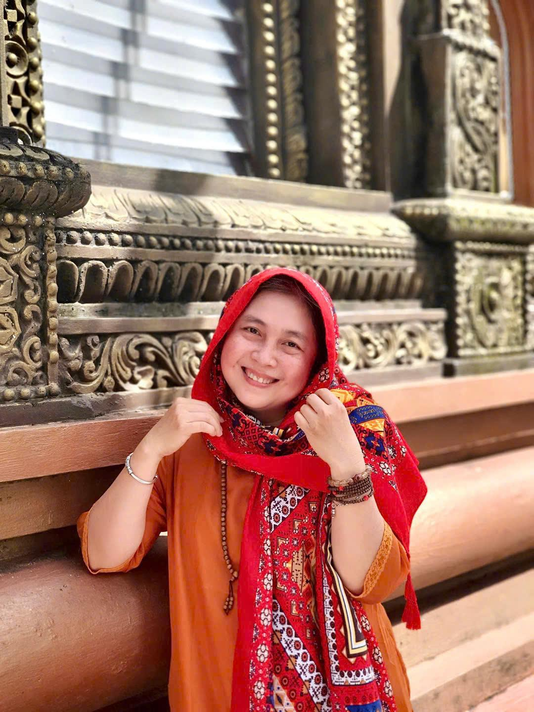

Học viên chia sẻ
Hành Trình Thay Đổi Của Những Người Đi Trước
Những chia sẻ chân thật từ học viên đã đồng hành cùng học viện MCoach
HUYỀN DIỆU
Học viên chuyên sâu
"Tôi từng mải miết cống hiến và tìm kiếm giá trị của mình trong công việc, để rồi có lúc nhận ra mình đã đi quá xa khỏi chính mình và gia đình. Hành trình quay về giúp tôi nhìn lại điều gì thực sự quan trọng, kết nối lại với giá trị bên trong và tìm thấy La Bàn Nội Tâm. Giờ đây, tôi có thể mềm mại hơn trong hôn nhân, an vững đồng hành cùng con và tự tin phát triển sự nghiệp coaching đồng hành với những người phụ nữ từng đi qua đổ vỡ sống ra phiên bản đủ đầy trọn vẹn hơn."
PHƯƠNG OANH
Học viên chuyên sâu
"Tôi từng đi tìm rất nhiều cách để thay đổi mối quan hệ hôn nhân, rồi nhận ra điều mình cần trước tiên là quay về hiểu chính mình và những gồng gánh đã mang trong vai trò làm vợ, làm mẹ, làm con. Khi nhìn rõ những mô thức cũ và điều mình thực sự muốn, tôi đủ vững vàng để lựa chọn con đường phù hợp hơn cho gia đình, công việc. Hôm nay, tôi vừa vun đắp gia đình, vừa phát triển sự nghiệp coaching đồng hành với phụ nữ để giải phóng tự do đích thực."

LƯƠNG NGHĨA
Quản lý ngành viễn thông
"Trước đây, tôi thường rơi vào những vòng lặp cảm xúc và muốn kiểm soát mọi thứ trong công việc cũng như với con cái. Khi quay về nhận diện những mô thức và phản ứng tự động bên trong, tôi bắt đầu lắng nghe nhiều hơn, thấu hiểu nhiều hơn và chuyển từ kiểm soát sang đồng hành. Tôi bình an hơn với chính mình và hiện diện nhẹ nhàng hơn với những người mình yêu thương."
THANH VÂN
Nhân viên ngành ngân hàng
"Tôi từng mang rất nhiều áp lực từ công việc về gia đình, thường cảm thấy mình chưa đủ tốt. Khi học cách dừng lại, quan sát cảm xúc và hiểu điều gì đang thực sự diễn ra bên trong, tôi dần tìm lại sự bình an. Công việc, gia đình và bản thân không còn kéo tôi về những hướng khác nhau."
HOÀNG DIỆP
Nhân viên văn phòng
"Có nhiều năm tôi sống cùng những tổn thương cũ và sự phán xét bản thân mà không nhận ra chúng đang âm thầm dẫn dắt cách mình sống. Khi gọi tên được những nỗi sợ, nhu cầu và mô thức bên trong, tôi dần biết yêu thương chính mình và buông những gồng gánh với chồng con."
KIỀU VÂN
Từng là NV kế toán tại Ba Lan
"Là mẹ của hai con nhỏ, tôi từng quá tải giữa việc chăm sóc gia đình và mong muốn có một con đường phát triển cho riêng mình. Hành trình quay về giúp tôi chậm lại, hiểu mình và nhận ra những giá trị thực sự muốn sống. Hôm nay, tôi có thể toàn tâm bên các con mà vẫn phát triển sự nghiệp coaching, đồng hành cùng những bà mẹ trẻ tại Ba Lan."
"Tôi từng định nghĩa mình là một người phụ nữ của gia đình, quen đứng phía sau vun vén cho chồng con nhưng sâu bên trong lại cảm thấy mình chưa thực sự được là mình. Khi nhìn lại những định khung, mô thức cũ và kết nối lại với giá trị của bản thân, tôi dần tìm thấy sự an toàn bên trong. Tôi tin vào mình hơn và không còn phải cố gắng chứng minh giá trị với bên ngoài như trước."
HẰNG NGUYỄN
Nhân viên ngân hàng
"Trước đây, mỗi khi có vấn đề, tôi thường đi tìm lời khuyên và câu trả lời từ bên ngoài mà ít khi thực sự lắng nghe mình. Hành trình soi chiếu giúp tôi dừng lại, nhìn sâu vào bên trong và kết nối lại với những nhu cầu, giá trị của chính mình. Giờ đây, tôi biết tĩnh lại trước khi phản ứng và tin vào 'người thầy bên trong' như một chiếc la bàn để lựa chọn con đường phù hợp với mình."